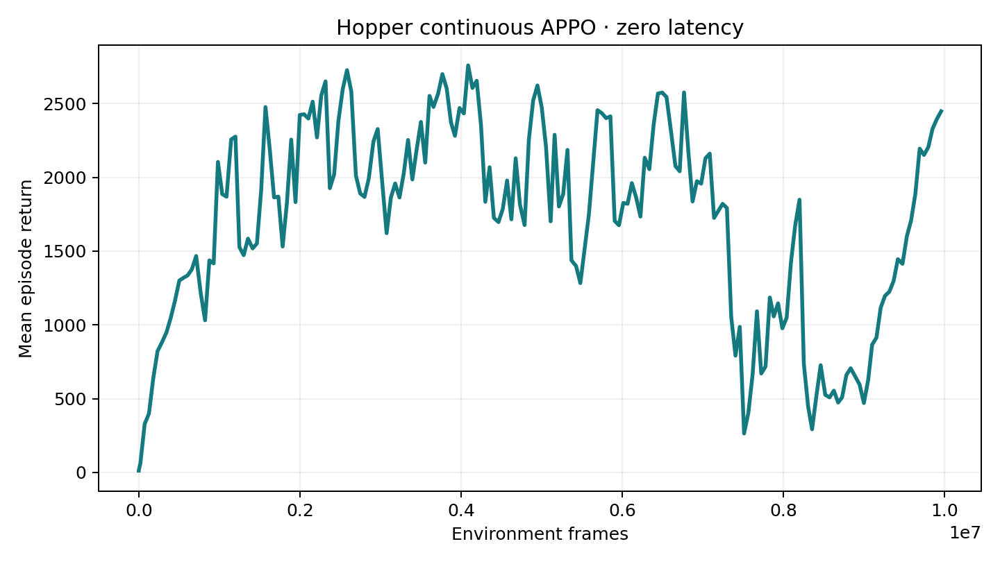
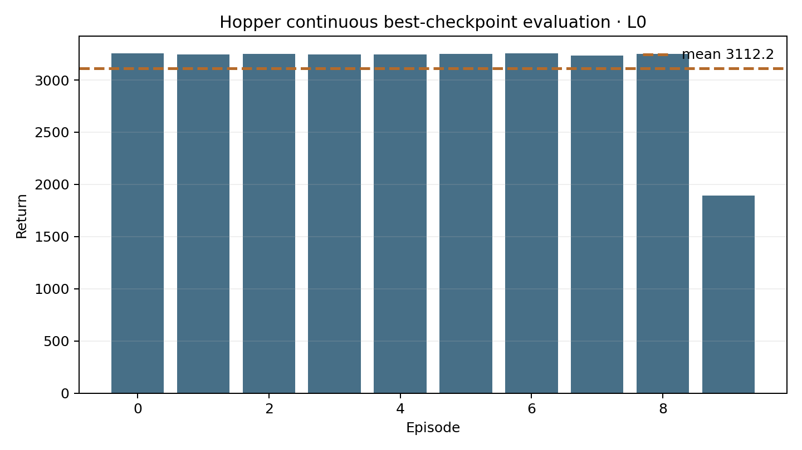
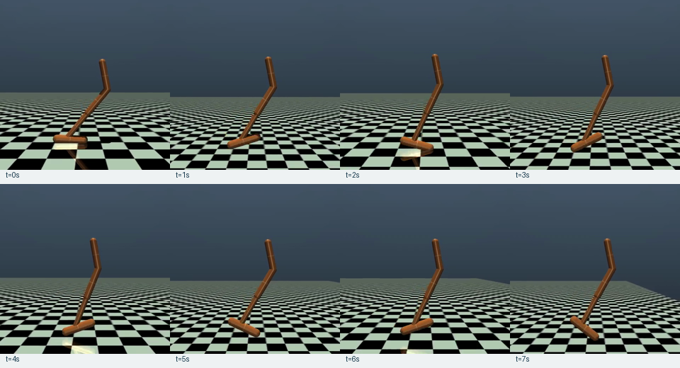

Box(3)
Thigh, leg, and foot torques are clipped to [-1,1] and applied directly.
latency-sensitive-bench / verified release example
The adaptation preserves Hopper-v4's native three-dimensional continuous action space, trains a synchronous Sample Factory APPO policy, and carries the same action order into the future OpenVLA bridge.
01 · Outcome
Thigh, leg, and foot torques are clipped to [-1,1] and applied directly.
Synchronous APPO completed 10,006,528 frames at 10,516 FPS.
The best checkpoint completed ten deterministic episodes.
Rollout, conversion, OpenVLA SFT, and VLA evaluation have not started.
02 · Frozen contract
Box(-1,1,(3,),float32).[0,0,0].[a0,a1,a2,0,0,0,0].active_action_dim=3, action_dim=7.03 · RL training

MUJOCO_GL=egl python -m training.train \
--config configs/examples/gymnasium/hopper_continuous/small_model_train.yamlBest checkpoint: best_000009664_4947968_reward_2623.665.pth.
04 · Closed-loop evaluation


05 · Evidence
06 · Limits